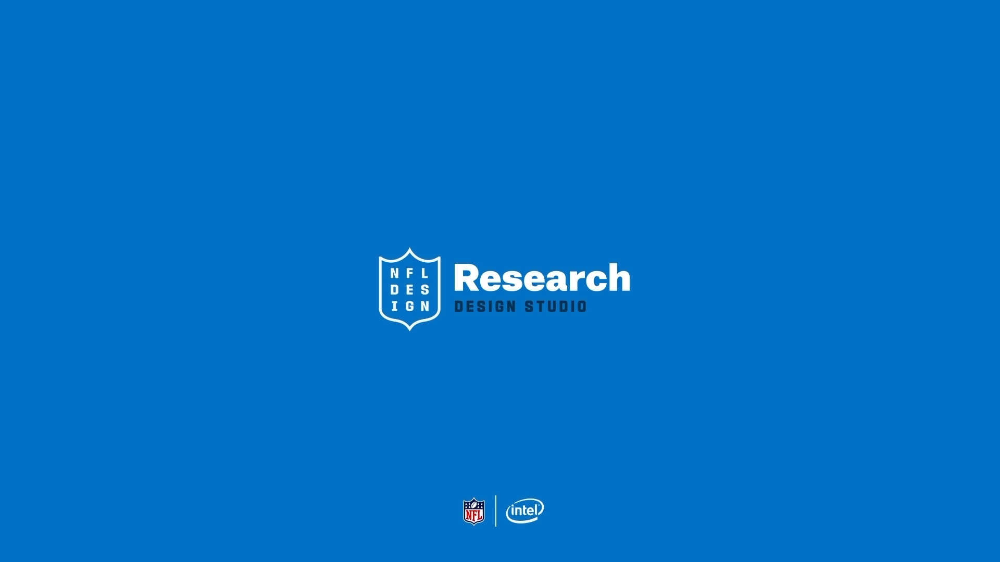

Case studies 10
NFL Labs
Intel TrueView 360° Prototype
Perspective control earned its place when fans wanted to understand a play—not as a default for every highlight.
Situation
- Intel’s TrueView prototype let fans rotate the camera all the way around a recorded play.
- Before investing further in the partnership, NFL Labs needed a clear read on whether fans actually wanted this.
Task
- Put the working prototype in front of real fans and learn how they used it.
- Turn what we learned into concrete product recommendations for both NFL Labs and Intel.
Action
- Ran design studios where fans tried the live TrueView prototype hands-on.
- Captured the moments when controlling the camera angle genuinely helped — and the moments when a normal highlight was all fans wanted.
- Translated those findings into recommendations for Game Pass and condensed-replay experiences.
Result
- Answered whether fans actually wanted the feature. The study delivered a clear read on fan appetite, plus specific recommendations for how an interactive replay should work.
- Gave both partners a shared starting point. NFL Labs and Intel came away with a common research basis for deciding their next steps together.
- Role
- UX Researcher (study lead)
- Methods
- Design studios · Live-prototype testing · Behavioral observation
